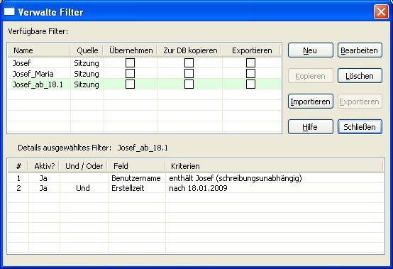

Ein "Filter" ist ein Kriterium (oder ein Satz an Kriterien), ob ein Eintrag dem Filter entspricht oder auch nicht. Password Safe erlaubt es Filter zu definieren, um nur die Einträge anzuzeigen, die dem gegebenen Filter entsprechen. Sie können das Filter für eine einmalige Abfrage hernehmen, oder Sie können die Filter mit Namen versehen und dauerhaft abspeichern. Filter können in der Datenbank abgelegt werden, oder extern, um die Filter für mehrere Datenbanken gemeinsam verwenden zu können.
Filter definieren
Um ein neues Filter zu definieren, wählen Sie das Menü Ansicht->Filter->Filter neu/bearbeiten aus. Folgender Dialog wird angezeigt:
Wie Sie sehen, besteht jedes Filter aus einer oder mehreren Zeilen, wobei jede dieser Zeilen ein Kriterium für ein gegebenes Feld umfasst. Die Bedingungen, die in jeder Zeile definiert sind, können entweder "und" oder "oder" der Bedingung in der vorherigen Zeile sein. Auf diese Weise können Sie Filter zusammenstellen wie:
Alle Einträge mit dem Benutzernamen "josef" oder "Josef" oder "JOSEF":
Alle Einträge mit dem Benutzernamen "Josef" erstellt nach dem 18ten Januar 2009
Alle Einträge mit den Benutzernamen "Josef" oder "Maria"
Wie Sie sehen können, können Filter einigermaßen komplex werden.
Die Spalten im Filter sehen wie folgt aus:
'#' - Dies ist die Zeilennummer. Sie wird nur aus Bequemlichkeit angezeigt, und kann nicht geändert werden.
'?' - Dies markiert, ob die Zeile aktiv ist oder nicht. Nur aktive Zeilen werden angewandt, wenn das Filter eingesetzt wird. Mit Klicken kann die Markierung für die jeweilige Zeile ein- bzw. ausgeschaltet werden.
'+' - Dies fügt beim Klicken eine neue Zeile unterhalb der jetzigen Zeile ein.
'-' - Dies löscht die aktuelle Zeile. Hinweis: Das Löschen einer Zeile ist unwiderruflich. Vielleicht wäre es besser sie nur zu deaktivieren mit '?'.
'Und/Oder' - Dies erlaubt die Festlegung der Verknüpfung zwischen dieser Regel und der Regel in der Zeile darüber.
'Feld' - Wählt das gewünschte Feld aus, z.B. Benutzername, Titel, Gruppe, Notizen, usw.
'Kriterien' - Stellt den gewünschten Wert für das ausgewählte Feld ein. Wenn Sie einmal ein Feld ausgewählt haben, klicken Sie darauf und ein Dialog wird dann angezeigt womit Sie die erforderlichen Kriterien festlegen können.
Filter anwenden
Nach der Definition eines Filters, genügt das Anklicken von 'Übernehmen', damit das Filter auf die Einträge in der Datenbank angewendet wird. Der Filterdialog bleibt offen. Dies ist nützlich, um die Filterung basierend auf den erreichten Ergebnissen anzupassen und zu verfeinern. Mit Klicken auf 'OK' wird das Filter ausgeführt und der Filterdialog verlassen.
Wenn ein Filter aktiv ist, wird die gefilterte und die gesamte Anzahl Einträge in der Datenbank in der Statuszeile angezeigt. Ein rot-weißes Symbol () erscheint ganz rechts. Die Einträge selber werden rot dargestellt.
Filter Verwalten
Filter definieren und editieren ist ein einfacher und bequemer Weg sie anzuwenden, aber nur für einmal. Wenn Sie allerdings wünschen, öfter mehrere Filter anzuwenden, dann können Sie diese abspeichern und im Dialog Ansicht->Filter->Verwalten auf einfache Art und Weise verwalten.

Der Dialog 'Verwalte Filter' hat zwei Tabellen. Die obere listet die Filter auf, und die untere listet die Elemente des ausgewählten Filters auf.
Um ein neues Filter einzufügen, klicken Sie auf 'Neu'. Dies ist das Gleiche wie Menü Ansicht->Filter->Filter neu/bearbeiten.
Um ein Filter zu bearbeiten, klicken Sie es an, und drücken Sie 'Bearbeiten'.
Um ein bestehendes Filter anzuwenden, klicken Sie auf 'Übernehmen' in der gewünschten Filterzeile. Beachten Sie dabei, dass nur ein Filter zur selben Zeit angewendet werden kann.
Filter speichern
Filter können entweder als Teil der aktuellen Datenbank abgespeichert werden, oder extern als XML Datei. Das externe Abspeichern von Filtern ist ein guter Weg, um Filter über mehrere Datenbanken gemeinsam verwenden zu können. Das Abspeichern in die Datenbank hingegen stellt sicher, dass eventuell sensible Informationen in den Filtern geschützt sind (und bleiben).
Um Filter in einer externen Datei auszulagern: markiere 'Exportieren' in eine oder mehrere der gewünschten Filterzeilen, dann klicken Sie auf die Taste 'Exportieren'.
Um Filter in die aktuelle Datenbank auszulagern: markiere 'Zur DB kopieren' und klicken Sie dann auf die Taste 'Kopieren'.
Um extern gespeicherte Filter zu laden: klicken Sie auf die Taste 'Importieren'.
Hinweis: Beim Starten sucht Password Safe nach einer Datei mit dem Namen autoload_filters.xml im selben Verzeichnis, in welchem die Datei pwsafe.cfg steht (standardmäßig das Verzeichnis, in welchem Password Safe installiert ist). Wenn diese Datei besteht, dann wird sie automatisch importiert und die enthaltenen Filter stehen von Anfang an zur Verfügung. Dies ist dann nützlich, wenn Sie Filter definiert haben, die Sie über mehrere Datenbanken anwenden wollen, ohne sie jedes Mal von Hand importieren zu müssen.


 ) erscheint ganz rechts. Die Einträge selber werden rot dargestellt.
) erscheint ganz rechts. Die Einträge selber werden rot dargestellt.